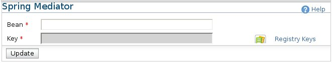

Spring Mediator
The Spring Mediator can be used to extend the synapse configuration using Spring beans.

Figure1: Spring Mediator
Here are the options for the Spring Mediator
-
Bean: The name of the bean
-
Key: The registry reference to the spring Application-Context/Configuration used for the bean. You can select it by clicking
the "Registry Keys".